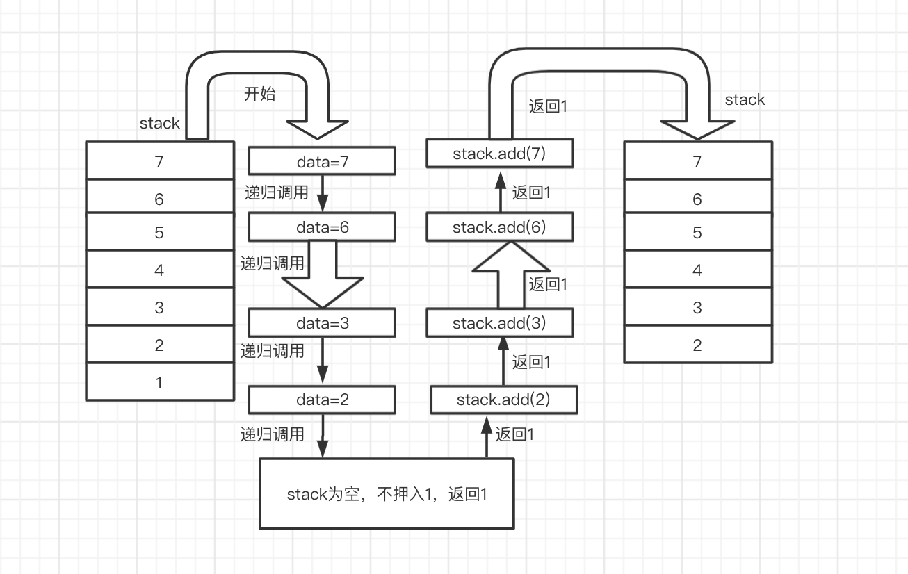
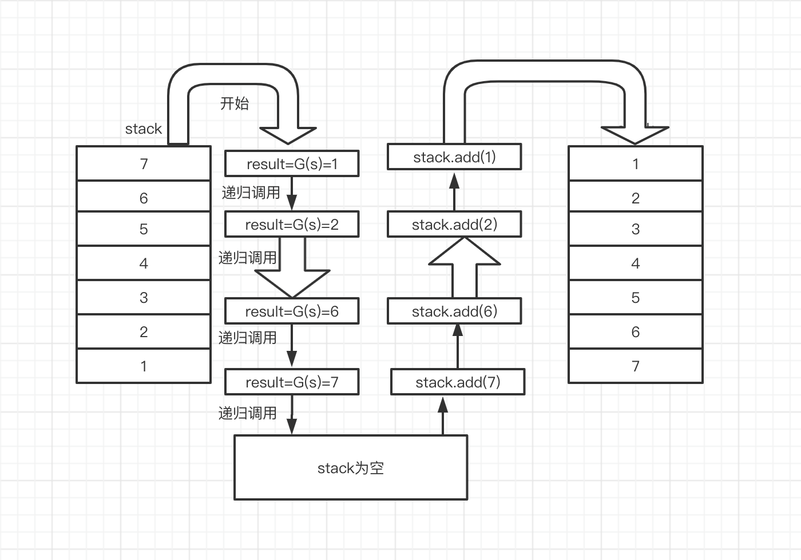

递归实现栈的逆序
题目
将栈只用递归方式实现栈的逆序。
实现思路:
1.先获取到栈底元素，保持原栈的数据信息。
2.将每一步获取到的栈底元素最后押入到栈顶。
图示说明
1. 返回栈底元素，并将其移出掉

2. 递归获取栈底元素，直到栈为空，在将获取到的元素押入到栈中。

实现代码
注意：本代码中的栈结构及其方法，引用上篇定义的栈结构及其方法
1
2
3
4
5
6
7
8
9
10
11
12
13
14
15
16
17
18
19
20
21
22
23
24
25
26
27
28
29
30
31
32
33
34
35
36
37
38
39
40package main
import "fmt"
// 每次弹出栈底元素
func GetAadRemoveLastElement(m *StackData) interface{} {
data, _ := m.Poll()
if m.IsEmpty() {
return data
} else {
last := GetAadRemoveLastElement(m)
m.Add(data)
return last
}
}
// 递归实现元素的翻转
func Reverse(d *StackData) {
if d.IsEmpty() {
return
} else {
result := GetAadRemoveLastElement(d)
// 获取 1--2--3
Reverse(d)
// 压入 3--2--1
d.Add(result)
}
}
func main() {
d := InitStack()
d.Data = []interface{}{"1", 2, 3}
d.Length = 3
fmt.Printf("%#v\n", d.String())
Reverse(d)
fmt.Printf("%#v\n", d.String())
}
// 输出结果
"[1 2 3]"
"[3 2 1]"